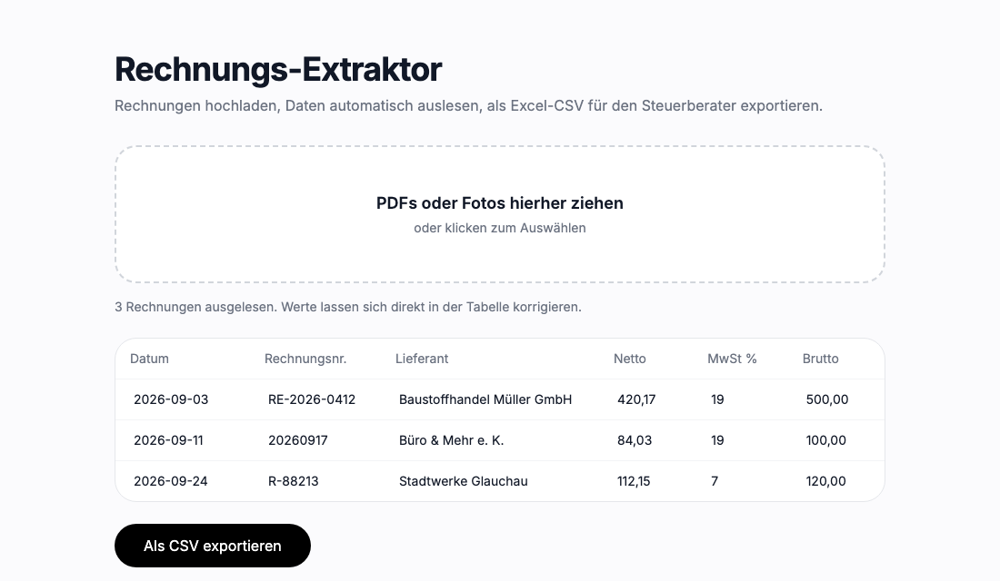
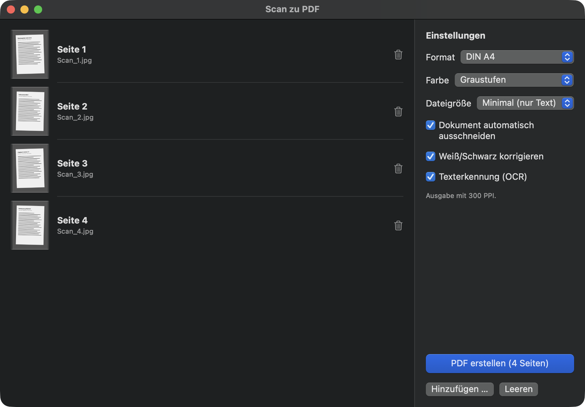
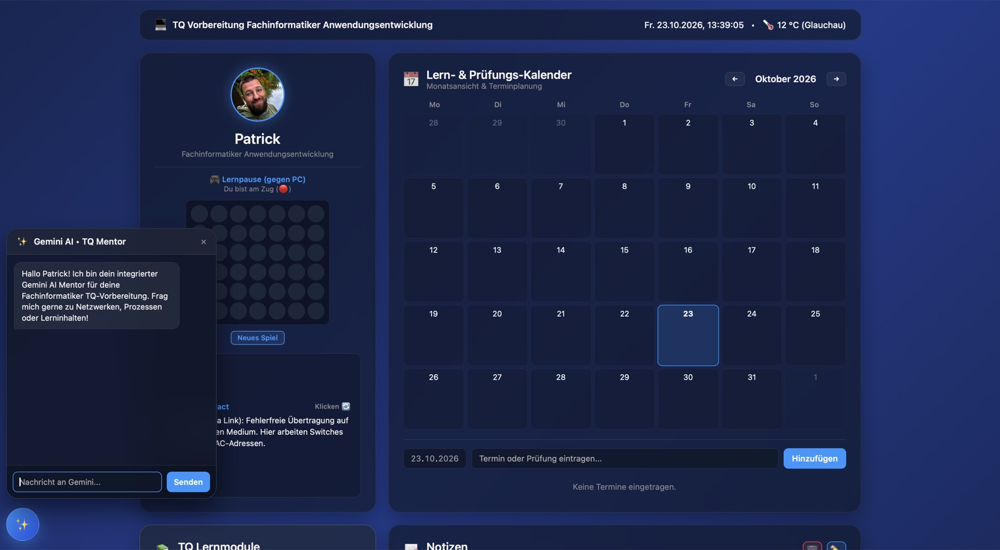
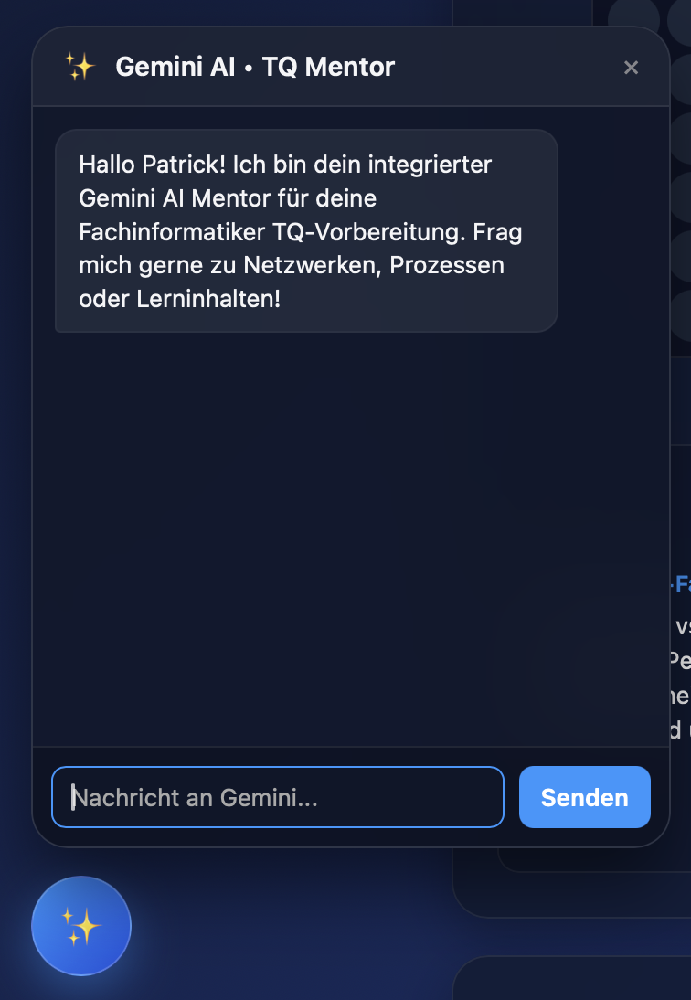
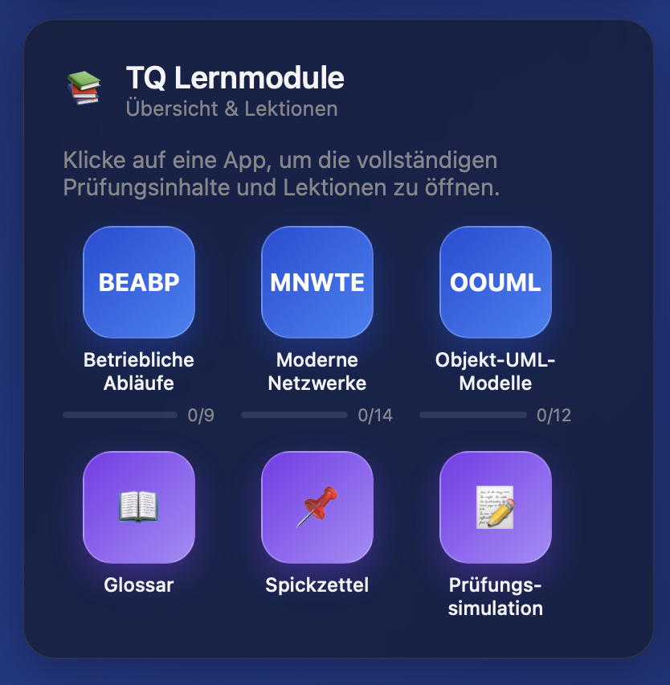

Ich helfe lokalen Unternehmen, mit minimalistischem Design und KI-gestützter Entwicklung digital sichtbar zu werden.
Kompakte Lösungen für maximale Wirkung.
Moderne, mobil-optimierte Einseiter, die Besucher in Kunden verwandeln.
Python-Skripte, die mühsame manuelle Aufgaben in Sekunden erledigen.
Schnelle Reparaturen, Performance-Optimierung und Fehlerbehebung.
Der Rechnungs-Extraktor liest Rechnungen per KI aus und macht daraus eine fertige Excel-Liste für deinen Steuerberater.

PDFs oder Fotos von Rechnungen ins Fenster ziehen, auch viele auf einmal.
Datum, Lieferant, Netto, MwSt. und Brutto erscheinen in der Tabelle und lassen sich direkt korrigieren.
Mit einem Klick als CSV speichern, die sich direkt im deutschen Excel öffnet.
Zur Auslese werden die Rechnungen an OpenAI gesendet. Details besprechen wir gern vorab.
Scans ins Fenster ziehen, fertig ist ein sauberes, durchsuchbares PDF in DIN A4.
Die Testversion kann alles, erstellt aber nur PDFs mit bis zu 3 Seiten und Wasserzeichen. Die Vollversion schaltest du mit einem Lizenzschlüssel frei.
Für macOS 14 oder neuer. Alles läuft lokal auf deinem Mac.

Beispielseiten
Wo Design auf Funktionalität trifft.

Ein hochmodernes Dashboard zur Prüfungsvorbereitung. Lernmodule mit Fortschrittsanzeige, Glossar, Spickzettel und eine Prüfungssimulation bereiten gezielt auf die Prüfung vor. Ein integrierter KI-Mentor und eine intuitive iCloud-ähnliche UI machen komplexes Lernen effizient und visuell ansprechend.

KI-Mentor Integration

Lernmodule & Prüfungssimulation
Tailwind CSS / HTML
Ich bin immer offen für spannende neue Herausforderungen. Schreib mir einfach eine Nachricht.
Nachricht senden